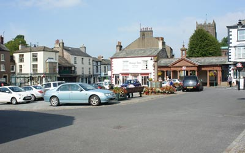
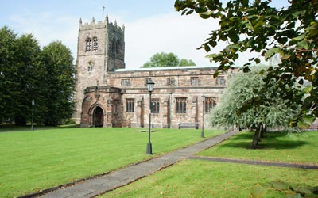

Kirkby Stephen Tourist Information
Kirkby StephenKirkby Stephen, positioned at the head of the Eden Valley enjoys the best of both worlds with the fells and waters of the Lake District to the west, and the valleys and moorlands of the Yorkshire Dales National Park to the east. |
 |
Bus ServicesConnections to Penrith, Appleby, Brough, Sedbergh, Kendal. Timetable information from Rail ServicesThe railway station on the Settle to Carlisle route is one mile from the town. Details of destinations and timetables from Nearby VillagesNateby, Hartley, Ravenstonedale, Newbiggin-on-Lune, Mallerstang. For more information on Kirkby Stephen, visit: www.walkeden.org For information on nearby Mallerstang, visit: www.mallerstang.com |
Attractions in Kirkby Stephen |
|
Popular WalksNorthern Viaducts Round - This is a walking or cycling path along the disused track bed of the Stainmore Railway. It can be joined from Stenkrith Park in the town and crossing the Millennium Bridge or, from the nearby village of Hartley. Along the way are restored platelayers huts, information boards detailing the history of the line, and the restored award winning viaducts of Podgill and Merrygill. Descriptive leaflets about the Northern Viaducts Trust are available from the Tourist Information Centre. The Eden Way The Poetry Path - Poet Meg Peacocke's celebration of the Eden Valley. Her 12 poems marking the farming calendar, are carved into a set of stones, some of which are placed in walls, stiles and upright in the ground along the route similar to milestones. For information and a booklet, visit the Tourist Information Centre. Lady Annes Way - A 100 mile walk from her birthplace in Skipton via Wharfedale, Wensleydale and Brougham Castle near Penrith. Lady Anne Clifford Westmorland Heritage Trail - Runs from her former home at Appleby Castle to Kirkby Stephen. Wainwright's Coast to Coast - C2C - Kirkby Stephen, standing 82 miles from St Bees on Cumbria's West Coast and 108 miles from Robin Hoods Bay on the east coast of Yorkshire is a welcome stop over or joining point on Wainwrights Coast 2 Coast Walk. The Howgills & Limestone Trail Smardale Gill Walk Getting there: From the A685 between Ravenstonedale and Kirkby Stephen, take the turning signposted Smardale. Ignore the turning to Waitby. Cross the railway and turn left at the Nine Standards Walk Yomp Mountain Challenge Ancient Castles of Mallerstang Walk Franks Bridge |
|
Settle to Carlisle Railway Described as “Englands most scenic railway journey”, Kirkby Stephen is an Eden Valley station stop on this famous railway line between Leeds and Carlisle. It's a marvel of Victorian engineering symbolised by the 24 arch Ribblehead Viaduct. More than 6000 labourers were employed during its construction and many died from from accidents and disease. The full number is not known but a memorial stone in St Marys Church, Mallerstang, commemorates 25 builders and their families and another site contains 80 unmarked graves. Regular daily diesel passenger services operate but for a truly memorable experience, take a ride on one of the steam hauled excursions. Free car parking at the station. Great walks from intermediate stations. Stainmore Railway Company A Railway Heritage attraction with a programme of events including “Steam Days”: “Steam Gatherings”: Footplate Experience Courses: a Model Railway Show and more. It's open at the weekends (except Christmas) from 10am till 4pm. with a number of days when diesel/steam passenger trains operate. |
|
Historical MonumentsPendragon Castle The ruins of the 12th C castle are in nearby Mallerstang Dale. If legend is to be believed, it was founded by Uther Pendragon, father of King Arthur. It stands on private land but access is allowed. Lammerside Castle |
|
Fishing Bessy Beck Trout Fishery is situated at the foot of the Howgills between Kirkby Stephen and Tebay It has fishing for all abilities from three small lakes providing challenges for the experienced fly fisherman and bait-fishing only for families and children. Tackle and bait can be hired. Angling tuition. Safe and easy access. Farm shop. Closed Mondays and Tuesdays Kirkby Stephen & District Angling Association |
|
Town Attractions The Loki Stone - An 8th C carved stone relic of the Viking occupation depicting a figure with beard and horns is in the west end of the church. Franks Bridge - A 17th C pack horse bridge close to a child friendly recreation area and riverside picnic spot. Stoneshot Alley - A hiding place beneath here was used by the towns inhabitants as a refuge during raids by the Border Reivers. Settle - Carlisle Railway - The town is a station stop on this famous 72 mile route which passes through the beauty of the Yorkshire Dales and the lush Eden Valley. Check for steam train excursions, and, book early. Eden Benchmarks - 10 carved stone sculptures, not in the town, but easily accessed. All by different sculptors and designed to reflect local pride in the countryside are placed on public foot paths along the River Eden between Mallerstang and Carlisle. “Passage”, one of the works by Laura White, has been placed in Stenkrith Park close to the town. For more information visit www.discover.edenrivertrust.org.uk |
 |